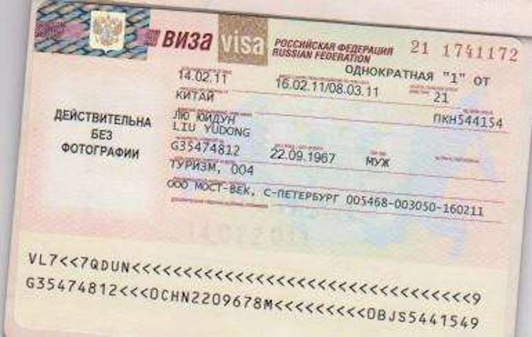

签证
#签证资料#
申请办理俄罗斯签证时，需要准备如下资料：
1、有效护照及护照主页复印件及身份证复印件一份
2、两张照片（35X45，二寸白底彩色照片）
3、签证申请表（应回答表内所有的问题）
4、俄罗斯旅行社签发的确认迎接外国旅游者函原件及其复印件

图：签证样本
#有效期#
俄罗斯旅游签证：
有效期：15天
停留期：15天
入境次数：单次
预计工作日：5-7天
#受理范围#
1、所申请的签证是否可以成功，取决于相关国家使领馆签证官的直接审核结果；若最终发生拒签状况，申请人应接受此结果，同时放弃追究本公司任何责任的权利。
2、预计工作日为使馆签发签证时，正常情况下的处理时间；若遇特殊原因如假期、使馆内部人员调整、签证打印机故障等，则有可能会产生延迟出签的情况；对申请人根据签证预计日期提示，而进行的后续旅程安排所造成的可能经济损失，本公司不承担任何责任。
3、有关签证资料上公布的签证有效期和停留天数，仅做参考而非任何法定承诺，一切均以签证官签发的签证内容为唯一依据。
4、需购买机票，建议出签后再购买。
#领区划分#
俄罗斯联邦驻沈阳总领事馆，
领区：辽宁、吉林、黑龙江
地址：沈阳市和平区南13纬路31号
俄罗斯联邦驻上海总领事馆，
领区：上海、江苏、浙江、安徽
地址：苏州河口的虹口区黄浦路20号
俄罗斯联邦驻广州总领事馆，
领区：广东、江西、福建、海南、云南、广西
地址：广州市珠江新城临江大道3号发展
俄罗斯联邦驻香港总领事馆，
领区：香港、澳门
地址：香港港湾道30号新鸿基中心2126室
其他为北京受理
俄罗斯联邦驻北京总领事馆
地址：北京市东城区东直门北中街4号
#入境手续#
1、入境文件：护照（具有效期的签证），出入境卡，海关申报单，旅游
2、公司的邀请函复印件、入境者下榻宾馆的确认函复印件。
3、以上文件必须用俄文或英文书写，出入境卡与海关申报单可以向机上空姐索取。
4、下飞机之后，手持护照与出入境卡，旅游公司的邀请函复印件、入境者下榻宾馆的确认函复印件前移民局办理入境手续，移民局可能会询问入境者一些问题，如实回答就好；
在移民局办理入境手续后，到行李提取处领取行李，并将海关申报单交给海关，进行行李检查，即可进入大厅，准备进入莫斯科市区。入境后，地方内务机关负责在“居留登记”一栏（出入境卡背面）为外国公民办理统一格式的居留登记记录。
5、请保管好出境卡的B表，在出境离开俄罗斯时交给移民局。
6、如游客有需申报的物品，如实填写海申报单，选择“红色通道”通关，海关人员可能会对所报现金及贵重物品进行检查；如旅客未携带需申报的物品，不用填写海关申报单，选择“绿色通道”通关
消费
#货币#
俄罗斯的货币单位是卢布。
卢布，符号： ₽（原符号Rbs. Rbl），俄罗斯卢布是俄罗斯的本位货币单位。
辅币是戈比。1卢布=100戈比。
纸币面额有10、50、100、500、1000、5000卢布，另有10卢布、5卢布、2卢布、1卢布以及50、10、5、1戈比铸币。

图：卢布
#货币兑换#
国内一般城市银行卢布是没有储备的，所以很难换到，除非北上到与俄罗斯接壤的边境城市。
如果从首都机场出发，可以选择在首都机场兑换少量卢布，以备应急需求。
如果选择自由行，只能在国内兑换好美金或欧元。到莫斯科，在阿尔巴特街和工会大街上都有很多银行，可以用美元或者欧元兑换卢布。除此之外，建筑外墙上挂出了汇率的地方，都是可以兑换卢布。
除了兑换现金外，更建议刷卡消费（含VISA或Master的信用卡），很多商店都可以刷卡消费，非常方便，现金可做备用买点小东西和给小费。
#注意事项#
1、首先，必须换美元或者欧元在身边。
2、在中国能换点卢布在身边即可，万一没有没关系。
3、随身携带好银联卡和信用卡即可，多多刷卡消费。
#小费#
付小费分2种情况：
1、如果是入住酒店时服务生帮忙拎行李，可以给1-2美元或50-100卢布，退房前如果觉得服务尚可，可以根据房费在房间桌上或床头柜上留5-10美元不等。
2、在餐厅吃完饭是要视情付小费的，如果餐费里已经打进了10-15%的服务费，可以给服务生整钱，付款时告诉他不用找钱即可。如果餐费里不包括服务费，付款时可适当多给服务生留些零头，不一定非要拿出额外10%的钱。
#消费水平#
俄罗斯的消费水平较高，物价平均水平高于中国，莫斯科的旅馆和餐饮价格要比北京高出3-5倍。莫斯科的物价与房价曾多次在全球范围内的排行榜上夺冠。
气候及穿衣指南
#气候#
莫斯科属于温和的温带大陆性湿润气候。极端气象十分频繁。
12月会开始漫长的冰雪消融期，降雪量大，平均年积雪期长达146天（11月初—4月中），冬季长而天气阴暗。1月平均气温-10.2℃（最低-42℃），平均每年气温零度以上的天数为194天，零度以下－－103天。
而夏天可能气温陡降，阴雨连绵。7月平均气温18.1℃（最高37℃）。
总计全年天气晴朗时间1568小时，年平均降水量190－240毫米。降水高峰期为8月和10月，降水量最少的是4月。
冬季多刮西风、西南风和南风。
自5月开始西北风和北风较为频繁。
#着装建议#
夏季时早晚温差大，建议多带一些挡风，保暖的衣服，冬季时更要带一些挡风的衣服，可以随意穿脱，室外偏冷，室内都有暖气
当地文化及其注意事项
1、俄罗斯人特别忌讳 13 这个数字， 7 则意味着幸福和成功；
2、镜子是神圣的物品，不能碎。
3、公共场所不可大声喧哗、交谈、随地吐痰和乱扔垃圾，且一般公共场所禁止吸烟。
4、坐车应该主动给老年人让座位，且随时记住女士优先，是素质高的标志。
5、在公共场合，切忌对人用手指指点点，俄罗斯人认为这是对人的莫大的污辱，美国人常用的手势 — 用大拇指和食指接触成“ O ”型，其他三指伸直，代表OK，在俄罗斯则是非礼的表示。
6、如果你去剧院或影院迟到了，别人已经坐好，千万不要屁股朝着别人往里挤，而要面对他们表示歉意。
7、不要做“不速之客”，不要拒绝跳舞，不要用手指点对方。
8、妇女戴头巾、男士脱帽才能进东正教教堂。
9、与熟人或朋友握手问好时，切忌伸左手。
10、俄罗斯人吃西餐时，只有在使用勺时才能把刀放下。面包要用手拿，举杯饮酒时要用右手，吃水果则一般不削皮。
语言
俄罗斯的官方语言是俄罗斯语，即使在圣彼得堡和莫斯科这样的大城市，会说英语的人和公共设施的英文标识并不多，但40岁以下的人和青年学生，有不少可以进行简单的英文交流。
在学校，学习英语并不普遍，很多学生选择德语为第二外语。
在圣彼得堡乘坐公共交通，一定要提前买好有俄英对应的地图。
圣彼得堡的酒店大多都支持多语种服务。
常用语
你好：Здравствуйте（ZDRAHST-vooy-tyeh））
我叫……：Меня зовут（mee-NYAH zah-VOOT）
请：Пожалуйста（pah-ZHAH-luh-stuh）
谢谢：Спасибо（spuh-SEE-buh）
是：Да（dah）
不，否定：Нет（nyeht）
劳驾：Простите（prah-STEET-yeh）
对不起：Простите（prah-STEET-yeh）
再见：До свидания（duh svee-DAH-nyah）
数字
1：один（ah-DEEN）
2：два（dvah）
3：три （tree）
4：четыре（chee-TYH-ree）
5：пять（pyaht）
6：шесть（shehst）
7：семь（syeem）
8：восемь（VOH-seem）
9：девять（DYEH-veet）
10：десять（DYEH-suht）
旅行用语
接受美元吗？
Вы принимаете американские доллары?（vyh pree-nee-MAH-ee-tyeh uh-mee-ree-KAHN-skee-yeh DOH-luhr-yh）
可以用信用卡吗？
Вы принимаете кредитные карты?（vyh pree-nee-MAH-ee-tyeh kree-DEET-nyh-yeh KAHR-tyh）
请问汇率是多少？
Какой курс обмена? （kah-KOY koors ahb-MYEHN-uh）
这个多少钱？
Сколько это стоит? （SKOHL’-kuh EH-tuh STOH-eet）
太贵了。
Это слишком дорого（EH-tuh SLEESH-kuhm DOH-ruh-guh）
通讯及邮政服务
#电话通讯 #
俄罗斯三大移动公司为MTS 、MegaFon和Beeline ，游客可以持护照在专卖店购买，如果需要打国际长途，可以买一种预付费电话卡，比如 Arktel ，价格比较优惠，在市区很多商店和报刊亭都买得到，邮局也有出售。
建议购买当地的IP 长途电话卡打中国约 2 元 / 分钟。
无忧行 App 也具备境外免费电话功能，让您随时随地与国内连线无压力。相关优惠及使用说明请参阅无忧行 App 内说明。
#上网 #
1、机场有免费 WiFi 。
2、莫斯科市区内多数咖啡厅都能上网 ， 部分是免费，而麦当劳每餐里面 含有30 分钟的免费上网券。
内地旅客也可利用无忧行 App 购买流量包让您免去一切忧虑，流量包无需换卡已经可以直接使用，不但价格优惠和有良好的网络品质，更有不同天数及流量等形式选择，让您度过无忧的俄罗斯之旅。
您亦可开通手机的国际漫游服务。相关明细资费可在无忧行 App 的首页上直接输入国家/地区名称查询。
#邮局#
邮局Otdeleniye pochtovoy svyazi
地址：ulitsa Nikol’skaya, 7, Moscow
联系方式：+7-495-6983437
邮局Otdeleniye pochtovoy svyazi
地址：litsa Serafimovicha, 2, Moscow
联系方式：+7-495-9590628
邮局Pochta Rossii, Otdeleniye svyazi
地址：naberezhnaya Kadashevskaya, 36/1, Moscow
联系方式：+7-495-9516232
邮局Otdeleniye pochtovoy svyazi
地址：ulitsa Prechistenka, 15, Moscow
联系方式：+7-495-6372857
莫斯科邮局官方网址：www.russianpost.ru/
紧急联络电话及公众服务机构
#使领馆#
中国驻俄罗斯大使馆（莫斯科）
地址：ulitsa Druzhby, 6, Moskva
联系方式： +7-495-9561168
传真：+7-495-9561168
邮箱：china_emb_ru@mfa.gov.cn
#紧急电话#
火警：01
报警电话：02
医疗急救：03
#小提示#
12308是外交部全球领事保护与服务应急呼叫中心为中国公民提供24小时领事保护与服务的领事保护热线。中国公民无论身处世界哪个角落，遭遇紧急情况时均可第一时间通过拨打呼叫中心热线，向祖国寻求领事保护与协助。在无忧行App中，提供了完全免费的12308拨打功能，只要手机可以上网，就可立即使用，不限时间。
小知识快速补给
1、俄人认为，40岁表示人生路程的一半，这个生日要悄悄地过，不要搞得热闹，否则对下半生不利，最多在家里庆祝一下，也不要邀请客人参加。
2、莫斯科人很注重仪表，很爱干净，衣着整洁。出门旅行总要带熨斗。
3、参加晚会、观看演出，莫斯科人习惯穿晚礼服，尤其是看芭蕾舞剧，显得特别高贵。
4、俄罗斯电压为220V，采用双孔圆型插座，中国游客需准备欧标转换插头
5、在莫斯科有许多酒鬼或乞丐会聚集在教堂门口，要尽量远离他们。
6、旅客携带油画出境时，需向海关提交俄文化部门开具的油画鉴定出境证明。 。
7、若遇到诈骗强盗行为，可拨打当地报案电话： 02
8、联络中国驻俄罗斯大使馆 （ 莫斯科 ）
电话： +7-495-9561168
地址： ulitsa Druzhby, 6, Moskva